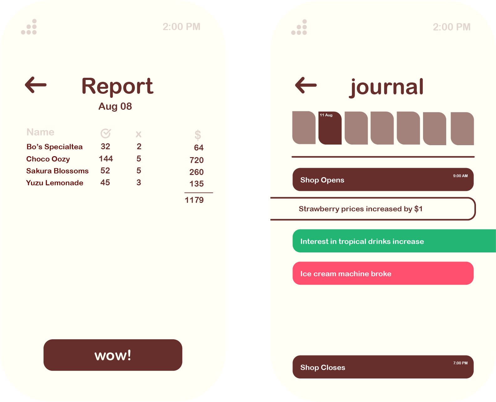

Day & AFK System
Boba runs in real time with day cycles (like animal crossing), with an opening and closing time set by the players. During the opening hours, changes to the menu and meta aspect of the game will be postponed until the next day.
As boba is a simulation game, the opening and closing time affects variables such as daily expenses and customer generation values. Following real hours, customers would be generated during peak hours such as evenings and nights. The type of customers is also affected by these hours! School kids won't appear during weekday mornings (no hookying!).
Take note of these aspects when setting up your menu and opening time! Players need to plan carefully to maximise profits. Can't be bothered? No worries! Boba is a comfy game, you can sell just plain ol tea and customers will still appear (wow).
What happens when I don't log in? Boba's AFK system will attempt to generate these numbers using a more simplified flatter formula. Profits will still rake in even if you're not logged in! Unless you're out of stock...
Appeal & Customers
So you've set up your menu. Why are your customers only office workers??? Both customers and drinks have a tag system. For instance, the office worker trope enjoys drinks with the tag "Coffee" and "Relaxing". Setting up drinks with these tags will greatly increase the appeal of your shop to the office workers.
Setting up a diverse menu is key to gaining a wider audience. Gaining a wider audience can help unlock inspiration faster!
"But I like my office worker collection!" That's okay too! Play the game as you want as long as you enjoy!
Reports & Journals
you've completed an entire day as a virtual bobaist..? barista? umm.. boba seller. now what?
the report system shows the daily sales

Others

Characters acquired also appear in the main menu, walking around and are interactable.